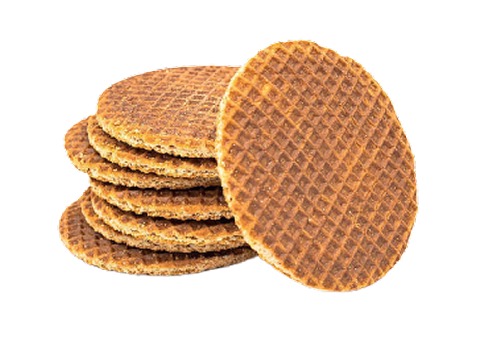
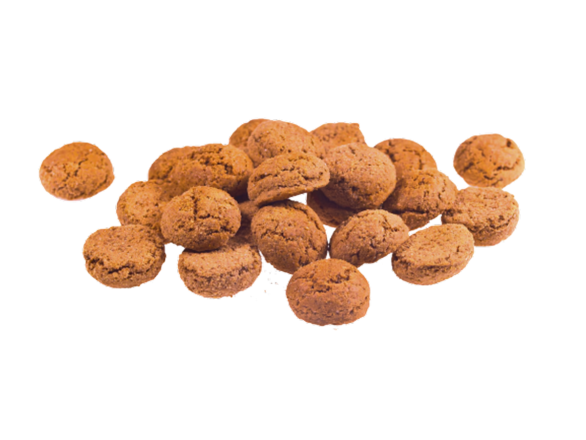

Traditionele zoetigheden uit Nederland —
van knapperige stroopwafels tot geurige pepernoten en zachte gevulde koeken.
Authentieke recepten, door de tijd bewezen,
gecombineerd met een moderne presentatie voor wie kwaliteit en historie in
elk detail waardeert.
Stroopwafel
De stroopwafel bestaat uit twee dunne,
knapperige wafels met daartussen een zachte karamelvulling op basis van stroop.
De wafel heeft een rijke karamelsmaak met een lichte kruidige toets en past perfect
bij koffie of thee. Traditioneel wordt een stroopwafel op een warme kop gelegd,
zodat de vulling licht smelt.

De stroopwafel ontstond aan het einde van de 18e eeuw in de stad Gouda.
Oorspronkelijk werd hij gemaakt van restjes deeg en stroop voor arbeiders —
een eenvoudig en betaalbaar zoet tussendoortje. In de loop der tijd werd het
recept verfijnd en groeide de stroopwafel uit tot een van de bekendste
symbolen van de Nederlandse keuken, tegenwoordig geliefd over de hele wereld.
Pepernoten
Pepernoten zijn kleine, harde koekjes met een uitgesproken kruidige smaak
van onder andere kaneel, kruidnagel,nootmuskaat en peper.
Ze hebben een stevige structuur en een warme, kruidige nasmaak.
Pepernoten worden vooral geassocieerd met de feestperiode en jeugdherinneringen.

Pepernoten zijn nauw verbonden met het Sinterklaasfeest,
dat in Nederland in december wordt gevierd. Ze verschenen voor het eerst in de 17e eeuw,
toen specerijen kostbaar waren en symbool stonden voor welvaart.
Het strooien van pepernoten naar kinderen was een teken van vrijgevigheid
en plezier — een traditie die tot op de dag van vandaag voortleeft.
Gevulde koeken
Gevulde koeken zijn zachte, kruimelige koekjes met een romige amandelspijsvulling.
Bovenop ligt vaak een hele amandel als decoratie.
De smaak is evenwichtig, niet overdreven zoet, met duidelijke nootachtige tonen.

De oorsprong van gevulde koeken gaat terug tot de middeleeuwen.
Amandelen golden destijds als een luxe ingrediënt, waardoor dit koekje
lange tijd alleen beschikbaar was voor de rijkere bevolking.
Later werd het recept toegankelijker en groeide de gevulde koek uit tot een
klassiek Nederlands gebak, populair bij koffie en thee.
U kunt de gepresenteerde producten kopen.
Stroopwafel
2,99 €
Stroopwafel
10 €
Stroopwafel
3,15 €
Een eenvoudige manier om je eten te bestellen:
Sommige gerechten zagen er zo afschuwelijk uit dat het leek alsof de hond ze had meegebracht,
maar na één hap zat ik mijn gedachten en woorden op te eten.
- Kies uw eten
- Toevoegen aan winkelwagen
- Bestel je eten